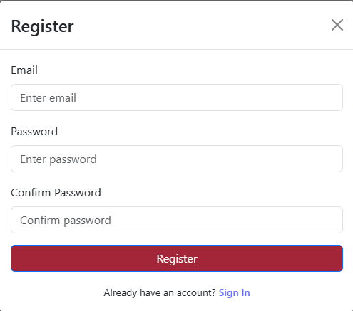
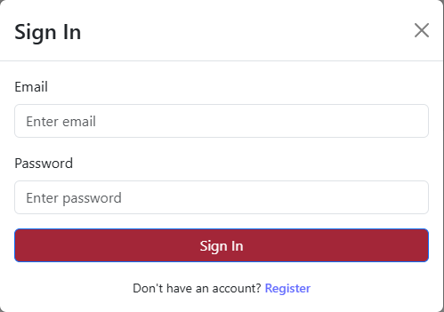

Feature Guide: Register & Sign In
This guide covers how to create an account, sign in, and sign out of
the COE Alumni Database.
Registering for an Account
To access the alumni database, you'll need to create an account.

Registration Requirements
| Field |
Required |
Description |
| Email Address |
Yes |
Your email address (used for signing in) |
| Password |
Yes |
Secure password for your account |
Note: Email verification is not currently enabled.
You can sign in immediately after registering.
Step-by-Step Registration
- Navigate to the registration page
- Enter your email address
- Create a secure password
- Click the Register button
-
You'll be automatically redirected to the Profile page to complete
your information
What Happens Next: After registering, you're
immediately taken to the
Profile page where you'll
enter your personal, academic, and professional information. This
ensures your profile is complete before you start networking with
other alumni.
Signing In
Use your registered email and password to access your account.

Sign In Steps
- Navigate to the sign-in page
- Enter your email address
- Enter your password
- Click the Sign In button
-
You'll be taken to your dashboard or the last page you visited
Signing Out
Always sign out when you're finished using the application, especially
on shared computers.
Sign Out Steps
- Click your profile icon or menu in the navigation bar
- Select Sign Out
- You'll be redirected to the sign-in page
Password Management
Note: Password reset functionality is not currently
available. If you forget your password, contact the system
administrator for assistance.
Privacy & Security
-
Your password is encrypted and cannot be viewed by anyone, including
administrators
- Never share your password with anyone
- Use a strong, unique password for your account
- Always sign out on shared or public computers
Next Steps
After registering and signing in, you'll want to complete your profile
with your academic and professional information.